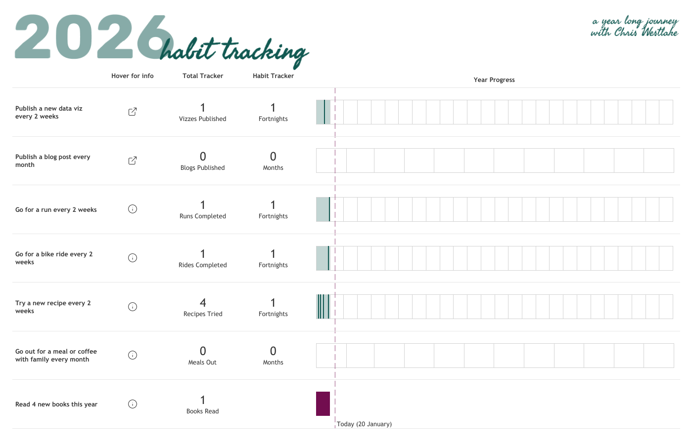
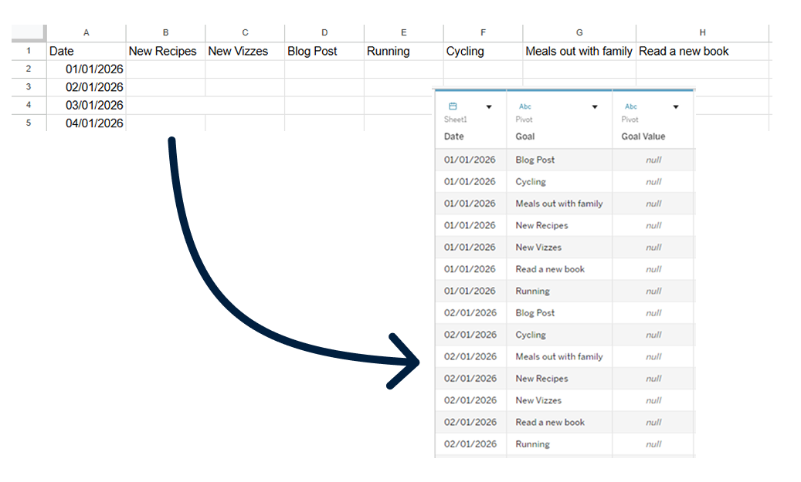
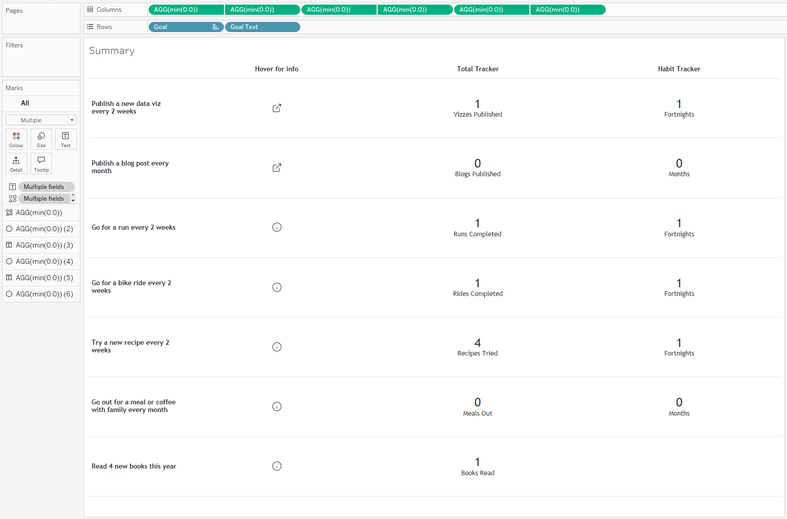
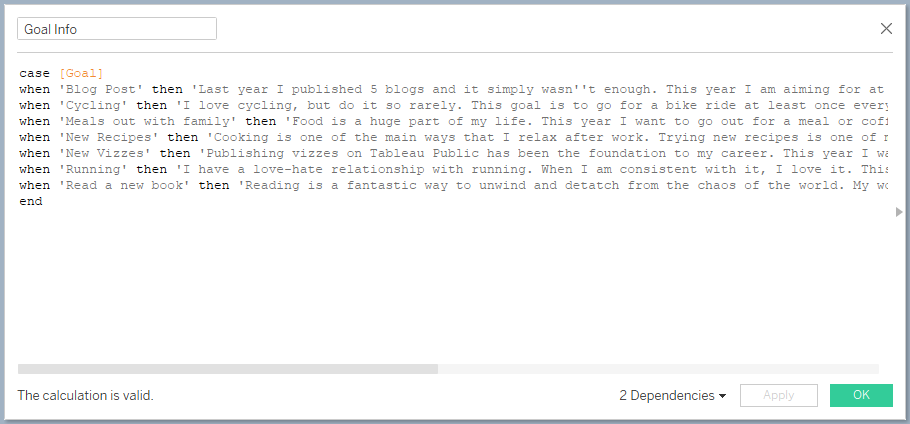
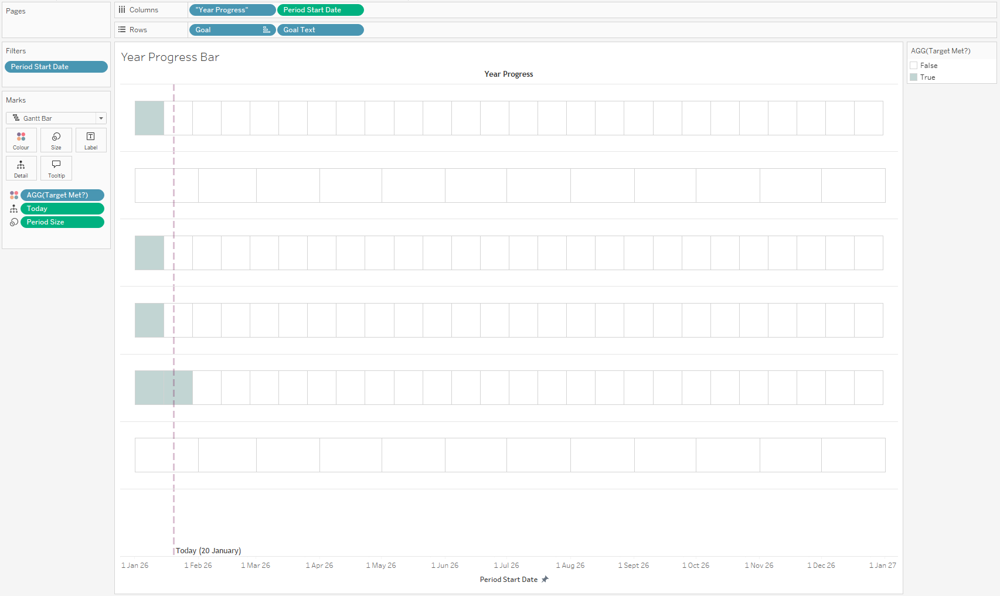
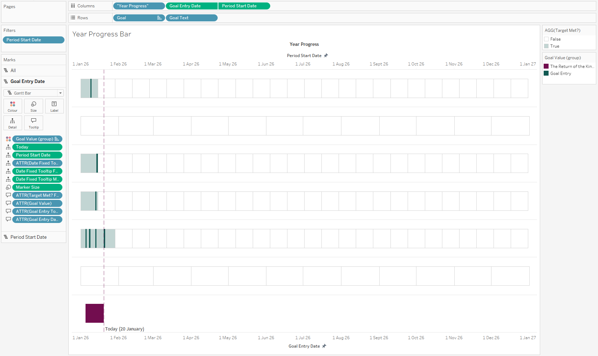
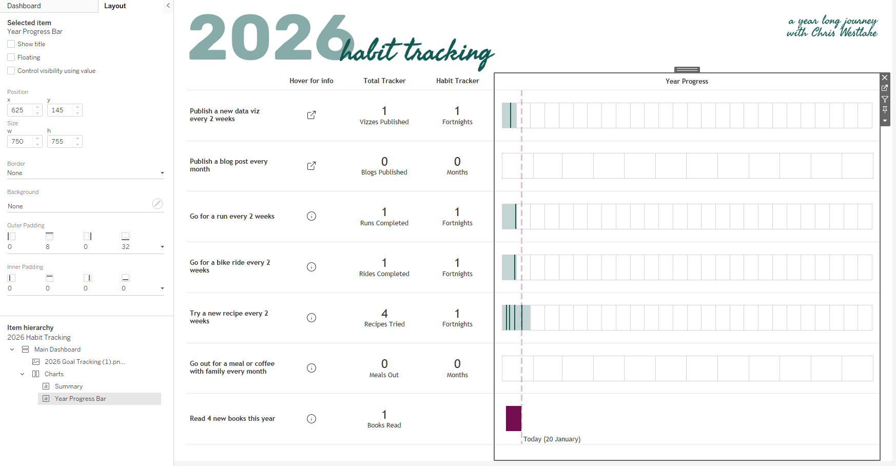
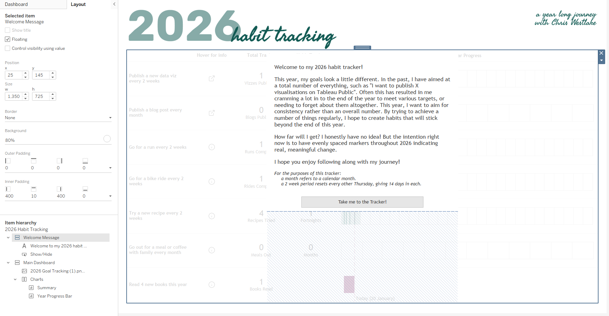

That was how I started my first blog post of 2025, and it seems apt to start this one in the same way. 2025 turned out to be a year of change. My priorities shifted a lot due to the arrival of my first child, and many things that I had hoped to do fell to one side. With this opportunity to begin again, I want to bring some of those priorities back into focus.
I have got 7 main goals for 2026. They look a little different to my goals from previous years as my life looks a little different now. I want to do more of what I did last year. More visualisations about topics that I love (probably more rugby - sorry if you have any issues with that!), more sharing my thoughts in blog posts, more time doing non-data stuff that I enjoy. Totals are less important to me than habits and making my new normal work in the best possible way. To keep myself on track, and check if I am creating (and sticking to) these habits, I needed a dashboard.

This dashboard is probably the most business style visualisation you’ll find on my Tableau Public. It is based heavily on something I built recently at work, and it incorporates some cool techniques that I thought would be useful to share. I obviously can’t share screenshots from the work dashboard, but will lean heavily on it for descriptions and ideas that you could use in your own work.
My client has just created a new set of KPIs that need to be tracked. They always want to see a 12 month trend, but not all KPIs are measurable on the same timeline. Some targets need to be met each month, others are quarterly. Some have data that comes from other dashboards that can be dived into for more information, others are brand new stand alone metrics.
I needed to create a one page summary that would include all of this information. It needed a timeline, key numbers in text format, any supporting information about the metric, and the option to navigate directly to another dashboard or site for more information if required. The resulting dashboard is made up of two sheets. Let’s take a look at them in turn.
Woah! Back a step! First we need data!
Wait! What does the data need to look like? I am collecting data for my goals this year in an Excel file. There is a column for date, and an additional column for each goal. The goal columns are pivoted when I bring the data into Tableau to give 3 fields: Date, Goal, and Goal Value.

Sheet 1 : Headers and Metrics
This is where everything except the trends go. In the case of my habit tracker, I have 4 columns in this view.

The first is text displaying each metric. This is just a pill on the Rows shelf. The others all run off dummy pills on the Columns shelf to give access to more functionality and open up more options for customisability. You can use any numerical value here, I tend to use min(0.0) because min is a faster aggregation than sum or avg in Tableau, and the decimal allows you to use decimals if you want to customise the axis range later. These dummy pills are also duplicated and set up as a dual axis to allow headers to be placed at the top of the sheet.
The first of the dummy columns gives more background information about the metric. The information itself lives in a tooltip using a calculated field. The calculation is a case statement with one entry per metric. Don’t worry about how long this looks in the calculation box – thankfully text wraps nicely in tooltips! The mark here is set to shape, controlled by a URL field. This changes the shape based on whether there is a click through available or not. A URL action in the dashboard using this field to populate the web address means that you can click through to the supporting page easily.

The other 2 dummy columns give the option to include high level numbers. In my dashboard here, the first is used for an overall total, while the second shows how many periods I have met my target for. In the case of the KPI dashboard I built at work, one of these additional columns included context for the high level number. Many of the KPIs are based on performance as a percentage which can easily be misleading if you don’t know the raw numbers. Maybe you missed a 100% target, but in reality you succeeded in 994 events out of 1000. Having that context alongside the main metric can be really useful to keep things in perspective.
You can add as many of these columns as you need. They will all be equally spaced, and can be easily maintained going forward.
Sheet 2 : Trends and Progress Tracking
This is the aspect of the visualisation that required the most thought, but the solution is relatively simple. I wanted to create a view that could feature different timescales on the same axes without using map layers. This makes it less complex, resulting in an easier handover if any fixes are needed when I’m not on hand.
The first thing we need is a field that tells us the start date of each period we are interested in. In my case here we need to find the start of each month for the monthly metrics, and every 14th day for the fortnightly metrics.
CASE [Target Freq]
WHEN 'Monthly' THEN DATETRUNC('month',[Date])
WHEN 'Fortnightly' THEN DATEADD('day' , FLOOR(DATEDIFF('day',#2026-01-01#,[Date])/14)*14 , #2026-01-01#)
END
In this calculation, the Target Freq field records the frequency for each goal. The DATETRUNC function records the 1st day in each month. The fortnightly section requires a bit more of a breakdown. We want to find the difference between the start of the year and any given date. This can then be divided by 14 and rounded down to give us the fortnight that the date falls into (the FLOOR function). I then multiply this number by 14 to give the days between the first day of the year and the start of each fortnightly period. All of this sits within a DATEADD function which will add this number of days to the first day of the year. The result is a mark at the start of each relevant period, depending on whether the metric should be measured monthly or fortnightly.
Next we need to determine the size of each period. For fortnights, this is just 14. For months we can use a fixed calculation to find the number of days in each month of the year. We can add this to size in the marks card for a Gantt Bar based off our Period Start Date. I have formatted these Gantt bars to appear transparent with a faint border – just enough to differentiate between them.
CASE [Target Freq]
WHEN 'Monthly' THEN { FIXED MONTH([Date]) : MAX(DAY([Date]))}
WHEN 'Fortnightly' THEN 14
END
The boxes that we are left with here can be coloured to flag when I have achieved the target. This runs off a simple calculation that checks if the number of entries for each goal in that period is at least 1. You could change this to other values depending on your goals.

The other axis in our dual axis chart is used to show when I made progress towards one of my goals. The presence of an annual goal (reading 4 books within 2026) means that we need to add a couple of steps.
The first additional step is to create another date field that sets the date for the reading goal to be the day a book was started. In all other cases the date is just my original date field. If you don’t have an annual goal like this, you can just use the date field from your source data.
IF [Goal] = 'Read a new book' THEN [Book Start Date] ELSE [Date] END
Add this to your view and set the mark to be a Gantt chart. In most cases you can set the size to 1 and a line will show each time you do something to progress towards your goal. That annual goal means that we need to do something a little differently, setting the size for that goal to be the number of days that I have been reading each book. The calculation looks like this:
IF [Goal] = 'Read a new book' THEN DATEDIFF('day',[Book Start Date],[Book End Date])
ELSE 1
END
This axis is where the tooltips live, and is the part of the view that can be interacted with.

I also added a Today() calculation to use as a reference line (incidentally this is something that you can’t do with map layers!), and played with the formatting for far too long!
Dashboard Time!
The dashboard creation is very simple. We need to put our two sheets next to each other, eliminate any space between them, and play with padding above and below to line up each row. For this reason you will need to adjust the height of your dashboard so that no scrolling within sheets is required, and have some slightly odd padding above and below the different sheets (see the screenshot below!).

One very final thing that I added is a welcome note. This sets the scene for the dashboard, providing a brief introduction for people so they have some context about what they are about to see. This sits within a container that has a degree of transparency so you can still see the dashboard beneath without there being too much to take in at once. I’ve included a show/hide button for this container within the container itself. This means that once you click the button to close it, you can’t go back. Is this a good idea? It is definitely a good idea to be cautious with this one, but for this case it works!

//
If you made it this far, thank you for following along! As always, you can download the workbook from my Tableau Public to see more of how this came together.
Take care // Chris